Architect Pro
Claude Certified Architect - Professional
The whole certification as bullets and pictures, with the official exam keywords and the real situations behind each one.
Module 1
Claude Platform & Solution Design
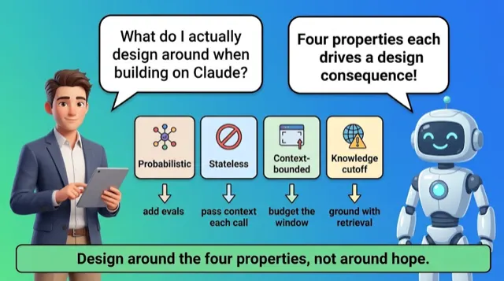
Foundations
- Non-determinism forces evaluation frameworks
- Context is finite token budget
- Confidence is not validity
- External system owns fast-changing truth
Important to learn · exam keywords
data shapedesignarchitectural decisions
Design around Claude's properties like an engineer designs around steel
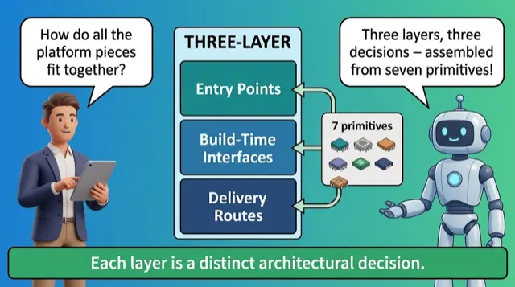
Platform Map
- Entry points, interfaces, routes: three layers
- Every deployment involves all three
- Patterns assemble the seven primitives
- Use fewest primitives necessary
Important to learn · exam keywords
MCPClaude Code
A house: front door, wiring, and the power street
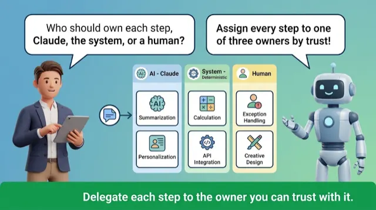
Decomposition
- Three owners: Claude, systems, humans
- Systems own already-reliable work
- Decomposition produces a delegation map
- Model doing lookups drifts silently
Important to learn · exam keywords
decomposition
Do not have the chef weigh every cup
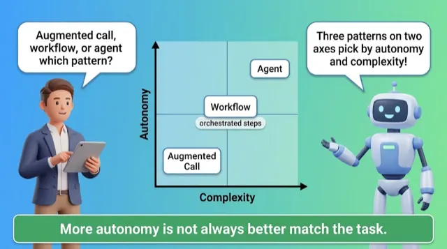
Patterns
- Predictability versus autonomy places each pattern
- Agent trajectory IS the control flow
- Four sub-patterns: chaining, routing, parallelization, evaluator-optimizer
- Tightest constraint, often error cost, decides
Important to learn · exam keywords
chunkingindexingdata shapequery patternretrieval strategy
Workflow is a relay; agent is a mapless explorer
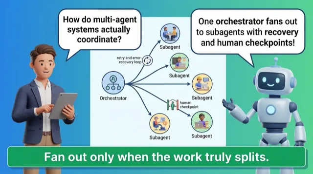
Orchestration
- Orchestrator decomposes, subagents carry parts
- Fan-out splits units, runs parallel, synthesizes
- Lost orchestrator state often unrecoverable
- Shared trace identifier keeps runs reconstructable
Important to learn · exam keywords
RAGmulti-agent systemsorchestration
An editor assigns reporters, then assembles the edition
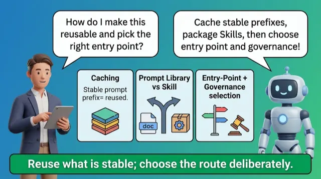
Reuse & Recap
- Caching needs a stable prefix
- Static before dynamic content
- Skill for cross-team versioned procedure
- Governance rules out routes first
Important to learn · exam keywords
augmented LLMSkillsmodel selectionmodular promptsprompt caching
Print the fixed menu header, rewrite specials below
Module 2
Enterprise Integration & Production
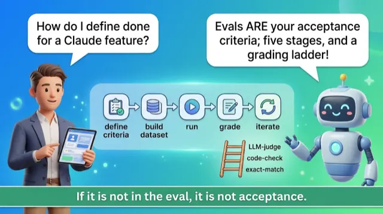
Evals
- Climb grading ladder, cheapest reliable first
- Code-based grading: unambiguous, near-zero, never drifts
- Calibrate LLM judge against human labels
- Criterion: behavior, threshold, failure modes
Important to learn · exam keywords
accuracyhallucinations
Taste with a spoon before serving the whole banquet
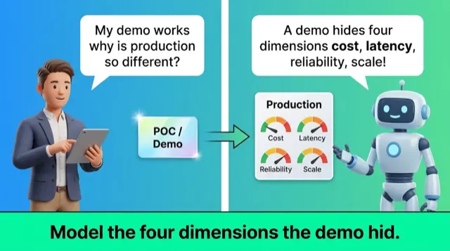
POC to Production
- Demo hides cost, latency, reliability, failure modes
- Model cost and latency, design against p95
- Backoff, fallback chains, circuit breakers placed by layer
- Caching helps stable prompt, risks consistency window
Important to learn · exam keywords
RAGcostlatencyprompt failurefailure modes
Quiet Sunday van jams during the holiday rush
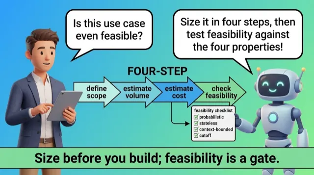
Sizing & Feasibility
- Feasibility: verdict plus boundary conditions
- Check POC moves the business metric first
- Name boundary conditions before committing
- ROI needs net, ranges, measured baseline
Important to learn · exam keywords
business value pillarstoken usage
Count boxes and doorways before promising the move
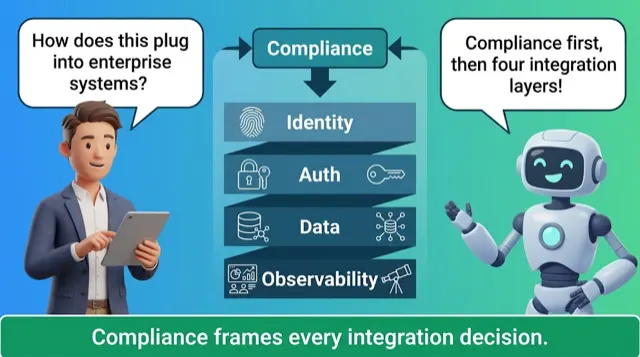
Integration
- Compliance eliminates routes and entry points first
- Entry points span Direct API to MCP
- Minimum-necessary data, reference IDs over fields
- Design-time observability catches data-scope violations
Important to learn · exam keywords
MCPobservabilityFedRAMPGDPRHIPAA
Show ID at the gate, carry only what's needed
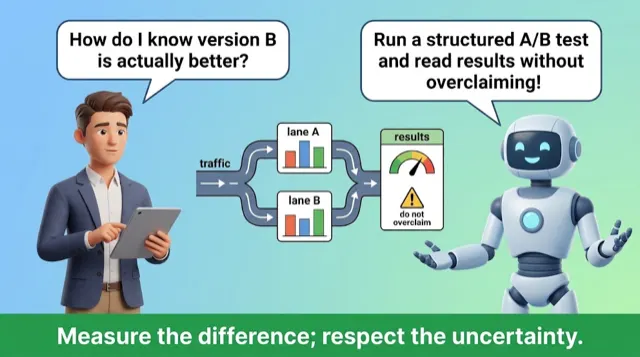
A/B & Recap
- Hypothesis, random assignment, primary metric, sample size
- Fix metric and sample size before running
- Probabilistic outputs need larger, noise-aware samples
- Significance is not practical significance
Important to learn · exam keywords
A/B testingprompt failure
Set finish line before the runners start
Module 3
Responsible AI, Safety & Risk
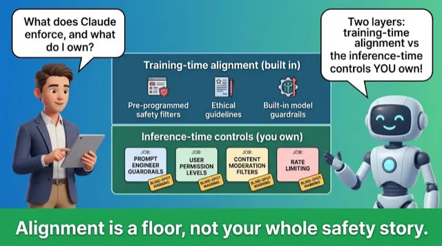
The Safety Stack
- Constitution prioritizes safe, ethical, helpful behavior
- Constitution ignorant of your domain policy
- Deployment rules enforced only at inference-time
- Assumed domain rules fail silently, no error
Important to learn · exam keywords
safetysafety controls
House alarm stops break-ins but ignores your locked-cellar rule
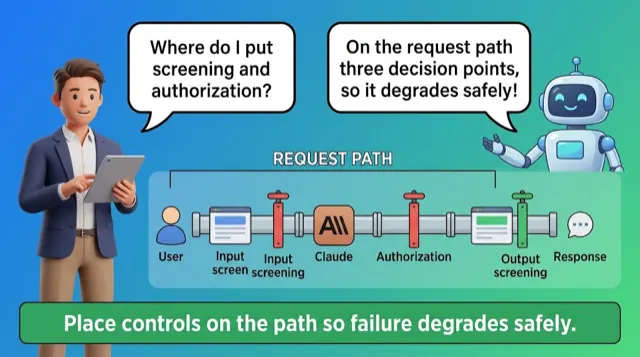
Guardrails
- Fail-open control worse than none
- Chain input, output, tool-call authorization in series
- Combine classifiers and deterministic rules; fail differently
- Screen retrieved content and tool outputs too
- Untrusted Skill is a supply-chain risk
Important to learn · exam keywords
authorizationguardrailsriskssafety controls
Club checks IDs at door, second guard watches the floor
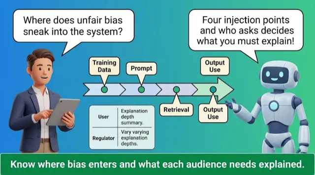
Fairness
- Passing outputs still yield unequal outcomes
- Four injection points for unequal outcomes
- Skewed corpus or leading frame skews outcomes
- Log inputs, context, output, routing per decision
- Different audiences need different explanations
Important to learn · exam keywords
loggingfairness
Clean-inspection restaurant still gives smaller portions to certain tables
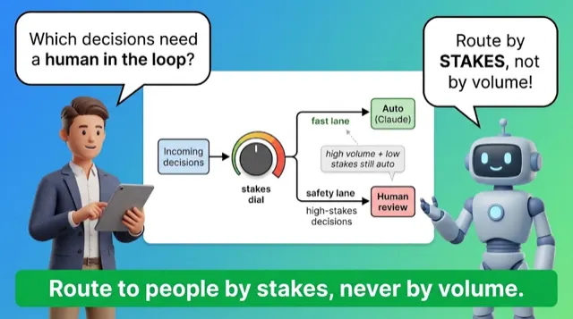
Human Review
- Human review is a finite attention budget
- Route low-confidence irreversible or high-cost decisions
- Weight cost and reversibility over confidence
- Give reviewers inputs, output, flag reason
- Pre-action approval blocks harm but adds latency
Important to learn
What the Reviewer Must SeePre-action approval · Post-action audit · Sampled review
Airport can't frisk everyone, sends only flagged to manual search
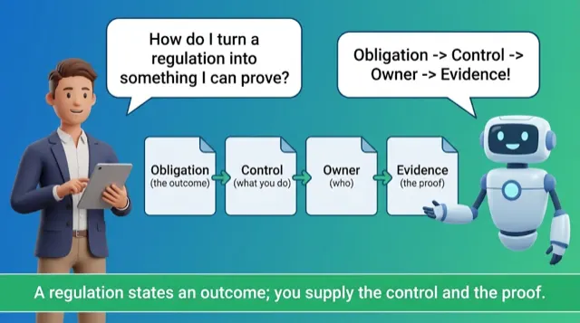
Compliance & Recap
- Compliant entry point prerequisite, not proof
- Each obligation needs control, owner, evidence artifact
- Evidence artifact most often missed
- Reviewer accepts live proof, not design docs
- Training-excluded data still retained for logging
Important to learn · exam keywords
loggingsecuritycomplianceFedRAMPHIPAA
Framed hygiene cert promises clean, inspector still reads the fridge log
Module 4
Stakeholder Engagement, Lifecycle & GTM
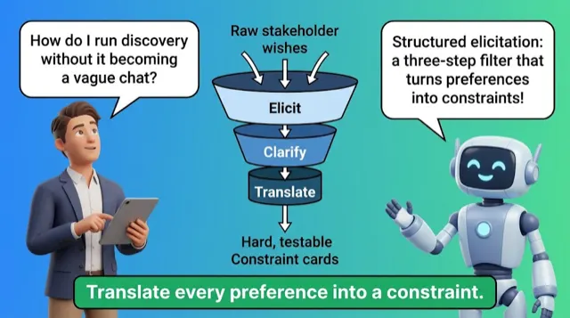
Discovery
- Structured elicitation across four fixed categories
- Deliverable is a translation table
- Experience words signal more discovery needed
- Must-prove ignored fails an audit
Important to learn · exam keywords
business problem translationdiscoverystructured discovery
Ask the four questions before drawing any walls
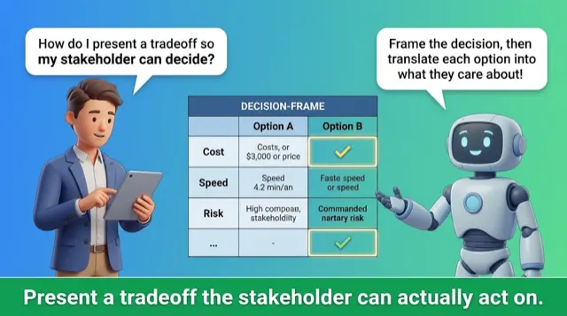
Tradeoffs & GTM
- Present decision as a package
- Reversal cost makes it informed
- Sort objections: governance, capability, compliance
- Wrong evidence erodes trust
Important to learn · exam keywords
business problem translationlimitations
Name the reversal cost so owners choose knowingly
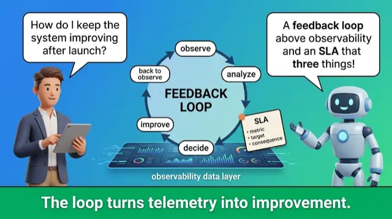
Feedback Loops
- Feedback loop is a governance table
- Signals, Triage, Decide, Act, Review
- Triggers and owners beat dashboards
- SLA names measure, breach, response
Important to learn
The Observability Stack That Replaced the Feedback LoopRegulated Checkpoints Run on a Schedule
Assign each alarm a trigger, owner, and action
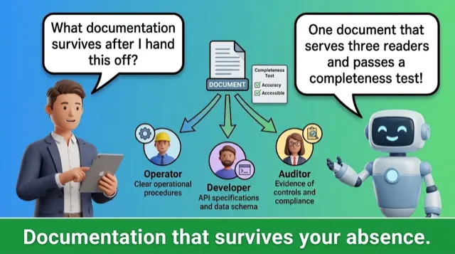
Documentation
- One document serves three readers
- Record rejected alternatives and tradeoffs
- Completeness test: safe change unaided
- Carry compliance control register forward
Important to learn · exam keywords
handoff
Write the why so successors keep load-bearing choices
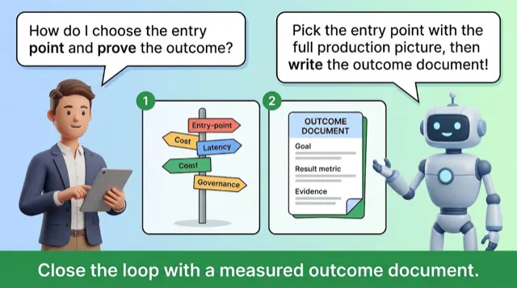
Outcomes & Recap
- Entry-point-responsibility map for multi-entry apps
- Outcome document reusable as partner IP
- Seven decisions are not independent
- Residency rule is the must-prove constraint
Important to learn · exam keywords
stakeholder feedback loops
Each decision inherits the constraint set earlier
Module 5
Team Enablement & Operational Productivity
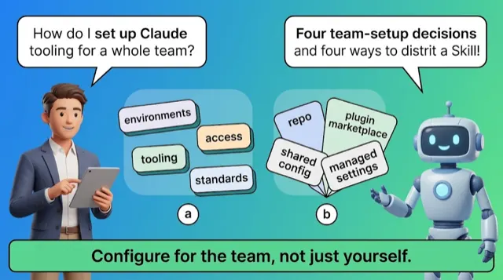
Team Setup
- Team config needs shared defaults, bounded spend
- Group plugin: targeting, version-controlled updates
- Org Skill reaches all, no rollback
- Versioning or rollback needs org-managed plugin
Important to learn · exam keywords
authenticationClaude tools and team environments
Canteen recipe binder, owned and versioned, fixed once for all
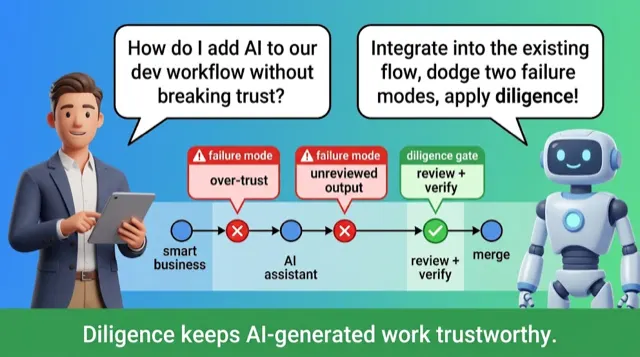
Developer Workflows
- AI tooling lives inside existing workflow
- Diligence: verify and vouch for outputs
- Verification checklist before production
- Automate checks: regression suite, eval gate
Important to learn · exam keywords
securityhuman in the loop
Carpenter's jig catches warped boards; evals gate every change
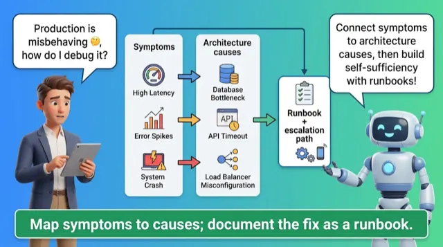
Operations & Capstone
- Symptoms trace to few architectural causes
- Gradual degradation: model, prompt, retrieval drift
- Runbook captures symptom-to-cause-to-action paths
- Escalation path defines who handles what
Important to learn · exam keywords
token usagedebuggingoperational issue resolution
Electrician's note maps tripped fuse to fix themselves